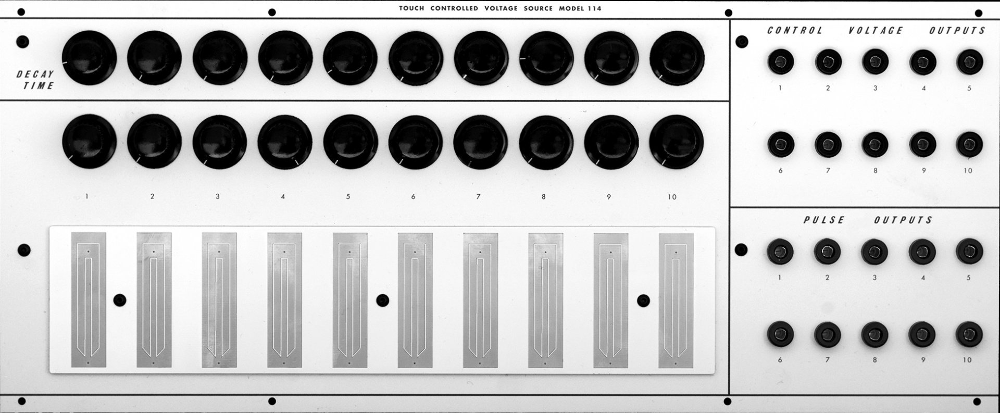

<br>
#### Week 1: Introduction
###My ideas for a final project
For my final project, I want to explore my love of electronic music instruments and analog circuitry. I am very inspired by the beauty and power of electricity and its ubiquitous presence in our bodies and all around us. In my project, I want to collaborate with electricity and use it to create sound.
Idea #1:
The Harvard University Studio for Electroacoustic Composition houses a Buchla 100 series modular synthesizer. It is a precious instrument that I've had the privilege to work with for the past couple of years. One of the limitations of working with this particular synthesizer at HUSEAC is that the only module that would allow triggering notes via touch -- module 114, the Touch Controlled Voltage Source -- has been broken for several years. Buchla touch controllers are legendary because their design is unique and leads to new ways of composing music, and I've always wanted to work with one, but haven't been able to.
My first idea is that I could build my own touch controller inspired by the Buchla module 114. It would be challenging to make a fully analog controller that could actually interface with the rest of the Buchla 100 at HUSEAC -- because it's so old and fragile, sending any innapropriate voltages could seriously damage it and that's a risk I cannot take. But I could learn from the design and schematics -- which are available online -- and build a cool controller that interacts with my own instruments.

Idea #2:
My second idea is also musical, and it's to make my own contact mic. I was inspired by composer Kelley Sheehan, a graduate student in the Music Department, who inverted the polarity of a large speaker to turn it into a contact mic that she then integrated into her compositional environments and ensembles. Contact mics produce incredibly interesting sounds that I would love to use for musical purposes.

Idea #3:
My third idea is to integrate both prior ideas and simply design and create my own electronic musical instrument. There's so much that I can do here -- not just touch control and contact mics -- but I could do all sorts of synthesizers with oscillators, filter, and amplifiers, and gather inspiration from DIY electronics communities online!
Because my interests lie especially in analog electronics, one of my challenges will be to find a way to include microcontroller programming in my project.